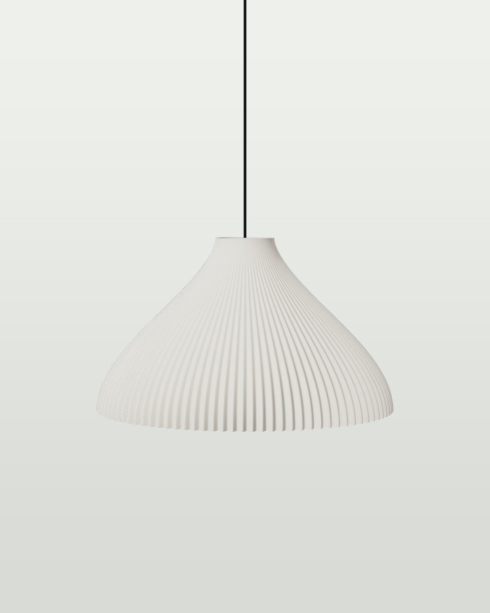

Pendant lamp
Firn
A pendant that glows like old snow against the light.
CHF 189
- Printed and assembled in Switzerland
- Free shipping in Switzerland over CHF 120
- 30-day returns
- 2-year warranty, spare parts for life
Firn is snow that has survived a summer. It turns dense and grainy and glows when the sun shines through. This pendant does the same with an LED.
The shade is printed with a single wall, 1 mm thin and still stable. 96 pleats open towards the rim like a fan. It spreads light wide across the table without glare, even from the side.
Three Firn in a row over a dining table, or twenty in a café: for projects we adjust cable length and colour.
Specifications
| Height | 20 cm |
|---|---|
| Diameter | 34.6 cm |
| Weight | 0.8 kg |
| Layers | 833 × 0.24 mm |
| Print time | 5 h |
| Material | Translucent PLA, PETG mount |
| Light source | E27 LED, 6 W, 2700 K (included), max. 7 W LED |
| Power | Ceiling connection with canopy, class II, installation by an electrician |
| Cable | 1.5 m textile cable, can be shortened |
In the box
- Lamp, assembled
- LED bulb (E27 models)
- Quick guide and safety notes
- Card with layer count and print date
Care
Dust with a dry microfibre cloth or soft brush. No water, no solvents. Keep away from direct sun behind glass and from radiators. Use LED bulbs up to 7 W only.